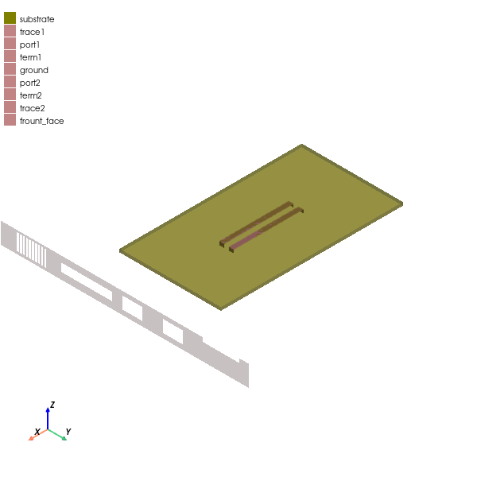

Download this example
Download this example as a Jupyter Notebook or as a Python script.
Eigenmode filter#
This example shows how to use PyAEDT to automate the Eigenmode solver in HFSS. Eigenmode analysis can be applied to open radiating structures using an absorbing boundary condition. This type of analysis is useful for determining the resonant frequency of a geometry or an antenna, and it can be used to refine the mesh at the resonance, even when the resonant frequency of the antenna is not known.
The challenge posed by this method is to identify and filter the non-physical modes resulting from reflection from boundaries of the main domain. Because the Eigenmode solver sorts by frequency and does not filter on the quality factor, these virtual modes are present when the Eigenmode approach is applied to nominally open structures.
When looking for resonant modes over a wide frequency range for nominally enclosed structures, several iterations may be required because the minimum frequency is determined manually. Simulations re-run until the complete frequency range is covered and all important physical modes are calculated.
The following script finds the physical modes of a model in a wide frequency range by automating the solution setup. During each simulation, a user-defined number of modes is simulated, and the modes with a Q higher than a user-defined value are filtered. The next simulation automatically continues to find modes having a frequency higher than the last mode of the previous analysis. This continues until the maximum frequency in the desired range is achieved.
Keywords: HFSS, Eigenmode, resonance.
Perform imports and define constants#
Perform required imports.
[1]:
import os
import tempfile
import time
import ansys.aedt.core
from ansys.aedt.core.examples.downloads import download_file
Define constants.
[2]:
AEDT_VERSION = "2025.1"
NUM_CORES = 4
NG_MODE = False # Open AEDT UI when it is launched.
Create temporary directory#
Create a temporary directory where downloaded data or dumped data can be stored. If you’d like to retrieve the project data for subsequent use, the temporary folder name is given by temp_folder.name.
[3]:
temp_folder = tempfile.TemporaryDirectory(suffix=".ansys")
Download 3D component#
Download the 3D component that is needed to run the example.
[4]:
project_path = download_file(
"eigenmode", "emi_PCB_house.aedt", temp_folder.name
)
Launch AEDT#
[5]:
d = ansys.aedt.core.launch_desktop(
AEDT_VERSION,
non_graphical=NG_MODE,
new_desktop=True,
)
PyAEDT INFO: Python version 3.10.11 (tags/v3.10.11:7d4cc5a, Apr 5 2023, 00:38:17) [MSC v.1929 64 bit (AMD64)].
PyAEDT INFO: PyAEDT version 0.18.dev0.
PyAEDT INFO: Initializing new Desktop session.
PyAEDT INFO: Log on console is enabled.
PyAEDT INFO: Log on file C:\Users\ansys\AppData\Local\Temp\pyaedt_ansys_69bc13d5-d7bb-4cfc-8900-7b29227498eb.log is enabled.
PyAEDT INFO: Log on AEDT is disabled.
PyAEDT INFO: Debug logger is disabled. PyAEDT methods will not be logged.
PyAEDT INFO: Launching PyAEDT with gRPC plugin.
PyAEDT INFO: New AEDT session is starting on gRPC port 63368.
PyAEDT INFO: Electronics Desktop started on gRPC port: 63368 after 6.143677711486816 seconds.
PyAEDT INFO: AEDT installation Path C:\Program Files\ANSYS Inc\v251\AnsysEM
PyAEDT INFO: Ansoft.ElectronicsDesktop.2025.1 version started with process ID 1644.
Launch HFSS#
Create an HFSS design.
[6]:
hfss = ansys.aedt.core.Hfss(
version=AEDT_VERSION, project=project_path, non_graphical=NG_MODE
)
PyAEDT INFO: Python version 3.10.11 (tags/v3.10.11:7d4cc5a, Apr 5 2023, 00:38:17) [MSC v.1929 64 bit (AMD64)].
PyAEDT INFO: Parsing C:\Users\ansys\AppData\Local\Temp\tmpr02547s_.ansys\eigenmode\emi_PCB_house.aedt.
PyAEDT INFO: PyAEDT version 0.18.dev0.
PyAEDT INFO: Returning found Desktop session with PID 1644!
PyAEDT INFO: Project emi_PCB_house has been opened.
PyAEDT INFO: File C:\Users\ansys\AppData\Local\Temp\tmpr02547s_.ansys\eigenmode\emi_PCB_house.aedt correctly loaded. Elapsed time: 0m 17sec
PyAEDT INFO: Active Design set to with_chassis_em
PyAEDT INFO: Active Design set to with_chassis_em
PyAEDT INFO: Aedt Objects correctly read
Input parameters for Eigenmode solver#
The geometry and material should be already set. The analyses are generated by the code. The num_modes parameter is the number of modes during each analysis. The maximum allowed number is 20. Entering a number higher than 10 might result in a long simulation time as the Eigenmode solver must converge on modes. The fmin parameter is the lowest frequency of interest. The fmax parameter is the highest frequency of interest. The limit parameter determines which modes are ignored.
[7]:
num_modes = 6
fmin = 1
fmax = 2
next_fmin = fmin
setup_nr = 1
limit = 10
resonance = {}
Find modes#
The following cell defines a function that can be used to create and solve an Eigenmode setup. After solving the model, information about each mode is saved for subsequent processing.
[8]:
def find_resonance():
# Setup creation
next_min_freq = f"{next_fmin} GHz"
setup_name = f"em_setup{setup_nr}"
setup = hfss.create_setup(setup_name)
setup.props["MinimumFrequency"] = next_min_freq
setup.props["NumModes"] = num_modes
setup.props["ConvergeOnRealFreq"] = True
setup.props["MaximumPasses"] = 10
setup.props["MinimumPasses"] = 3
setup.props["MaxDeltaFreq"] = 5
# Analyze the Eigenmode setup
hfss.analyze_setup(setup_name, cores=NUM_CORES, use_auto_settings=True)
# Get the Q and real frequency of each mode
eigen_q_quantities = hfss.post.available_report_quantities(
quantities_category="Eigen Q"
)
eigen_mode_quantities = hfss.post.available_report_quantities()
data = {}
for i, expression in enumerate(eigen_mode_quantities):
eigen_q_value = hfss.post.get_solution_data(
expressions=eigen_q_quantities[i],
setup_sweep_name=f"{setup_name} : LastAdaptive",
report_category="Eigenmode",
)
eigen_mode_value = hfss.post.get_solution_data(
expressions=expression,
setup_sweep_name=f"{setup_name} : LastAdaptive",
report_category="Eigenmode",
)
data[i] = [eigen_q_value.data_real()[0], eigen_mode_value.data_real()[0]]
print(data)
return data
Automate Eigenmode solution#
Running the next cell calls the resonance function and saves only those modes with a Q higher than the defined limit. The find_resonance() function is called until the complete frequency range is covered. When the automation ends, the physical modes in the whole frequency range are reported.
[9]:
while next_fmin < fmax:
output = find_resonance()
next_fmin = output[len(output) - 1][1] / 1e9
setup_nr += 1
cont_res = len(resonance)
for q in output:
if output[q][0] > limit:
resonance[cont_res] = output[q]
cont_res += 1
resonance_frequencies = [f"{resonance[i][1] / 1e9:.5} GHz" for i in resonance]
print(str(resonance_frequencies))
PyAEDT INFO: Key Desktop/ActiveDSOConfigurations/HFSS correctly changed.
PyAEDT INFO: Solving design setup em_setup1
PyAEDT INFO: Key Desktop/ActiveDSOConfigurations/HFSS correctly changed.
PyAEDT INFO: Design setup em_setup1 solved correctly in 0.0h 0.0m 39.0s
PyAEDT INFO: PostProcessor class has been initialized! Elapsed time: 0m 0sec
PyAEDT INFO: PostProcessor class has been initialized! Elapsed time: 0m 0sec
PyAEDT INFO: Post class has been initialized! Elapsed time: 0m 0sec
PyAEDT INFO: Solution Data Correctly Loaded.
PyAEDT INFO: Solution Data Correctly Loaded.
PyAEDT INFO: Solution Data Correctly Loaded.
PyAEDT INFO: Solution Data Correctly Loaded.
PyAEDT INFO: Solution Data Correctly Loaded.
PyAEDT INFO: Solution Data Correctly Loaded.
PyAEDT INFO: Solution Data Correctly Loaded.
PyAEDT INFO: Solution Data Correctly Loaded.
PyAEDT INFO: Solution Data Correctly Loaded.
PyAEDT INFO: Solution Data Correctly Loaded.
PyAEDT INFO: Solution Data Correctly Loaded.
PyAEDT INFO: Solution Data Correctly Loaded.
{0: [111.36581517444486, 1366596977.42807], 1: [1.2745925586601337, 1487148321.91718], 2: [0.7328320920094917, 1656995430.4749], 3: [0.6768569643872321, 1764794382.269], 4: [0.6667191256549964, 1770605065.50339], 5: [387.49585850937797, 1857246731.91083]}
PyAEDT INFO: Key Desktop/ActiveDSOConfigurations/HFSS correctly changed.
PyAEDT INFO: Solving design setup em_setup2
PyAEDT INFO: Key Desktop/ActiveDSOConfigurations/HFSS correctly changed.
PyAEDT INFO: Design setup em_setup2 solved correctly in 0.0h 0.0m 60.0s
PyAEDT INFO: Solution Data Correctly Loaded.
PyAEDT INFO: Solution Data Correctly Loaded.
PyAEDT INFO: Solution Data Correctly Loaded.
PyAEDT INFO: Solution Data Correctly Loaded.
PyAEDT INFO: Solution Data Correctly Loaded.
PyAEDT INFO: Solution Data Correctly Loaded.
PyAEDT INFO: Solution Data Correctly Loaded.
PyAEDT INFO: Solution Data Correctly Loaded.
PyAEDT INFO: Solution Data Correctly Loaded.
PyAEDT INFO: Solution Data Correctly Loaded.
PyAEDT INFO: Solution Data Correctly Loaded.
PyAEDT INFO: Solution Data Correctly Loaded.
{0: [0.7706274548926239, 2112924408.93827], 1: [421.73614867851217, 2279249993.82973], 2: [1.0925438452278264, 2347890555.46697], 3: [1.5912046790850607, 2366196574.26632], 4: [1.8390217225145156, 2518429992.61452], 5: [712.5452288843909, 2761352735.23965]}
['1.3666 GHz', '1.8572 GHz', '2.2792 GHz', '2.7614 GHz']
Plot the model.
[10]:
hfss.modeler.fit_all()
hfss.plot(
show=False,
output_file=os.path.join(hfss.working_directory, "Image.jpg"),
plot_air_objects=False,
)
PyAEDT INFO: Modeler class has been initialized! Elapsed time: 0m 0sec
PyAEDT INFO: Parsing design objects. This operation can take time
PyAEDT INFO: Refreshing bodies from Object Info
PyAEDT INFO: Bodies Info Refreshed Elapsed time: 0m 0sec
PyAEDT INFO: 3D Modeler objects parsed. Elapsed time: 0m 0sec
C:\actions-runner\_work\pyaedt-examples\pyaedt-examples\.venv\lib\site-packages\pyvista\jupyter\notebook.py:37: UserWarning: Failed to use notebook backend:
Please install `ipywidgets`.
Falling back to a static output.
warnings.warn(

[10]:
<ansys.aedt.core.visualization.plot.pyvista.ModelPlotter at 0x1f02824add0>
Release AEDT#
[11]:
hfss.save_project()
d.release_desktop()
# Wait 3 seconds to allow AEDT to shut down before cleaning the temporary directory.
time.sleep(3)
PyAEDT INFO: Project emi_PCB_house Saved correctly
PyAEDT INFO: Desktop has been released and closed.
Clean up#
All project files are saved in the folder temp_folder.name. If you’ve run this example as a Jupyter notebook, you can retrieve those project files. The following cell removes all temporary files, including the project folder.
[12]:
temp_folder.cleanup()
Download this example
Download this example as a Jupyter Notebook or as a Python script.